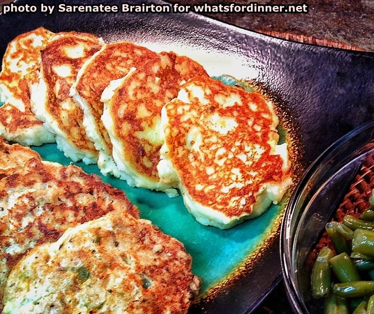

Sea Cake Supper

Ingredients
- 2 Cups Water
- 1/2 Cup Milk
- 1/4 Cup & 2 Teaspoons Margarine
- 2 Cups Instant Potato Flakes
- 12 Oz Canned Salmon
- 4 Eggs
- 2 Tablespoons & 2 Teaspoons Mayonnaise
- 1 Tablespoon & 1 Teaspoon Pickle Relish
- 1/4 Cup, 1 Tablespoon & 1 Teaspoon Italian Salad Dressing
- 1 Dash Dill Weed
- 1 Dash Pepper
- 1 Tablespoon & 1 Teaspoon Olive Oil
- 1 Dash Italian Seasonings
- 1 Dash Garlic Salt
- 2 Cans Green Beans
Steps:
- Place water, milk and margarine in a microwave-proof dish and heat to boiling (about 3 minutes).
- Mix in instant potato flakes and set aside.
- Drain salmon and beat with eggs, mayonnaise, pickle relish, Italian salad dressing, dill weed and pepper.
- Fluff mashed potatoes with a fork.
- Heat oil in a skillet over medium-high heat until hot.
- Using an ice-cream scooper, scoop fish batter into hot oil. Press gently to form patties.
- Fluff potatoes again and beat in eggs, Italian seasonings and garlic salt. Mix well.
- Melt margarine in skillet over medium-high heat.
- Scoop potato batter into hot margarine. Press into pancakes.
- Turn salmon patties. Reduce heat to low.
- Drain green beans and heat over medium with Italian salad dressing.
- Turn potato pancakes. Continue cooking over medium-high until brown on both sides.
- Serve salmon patties with potato pancakes and green beans.